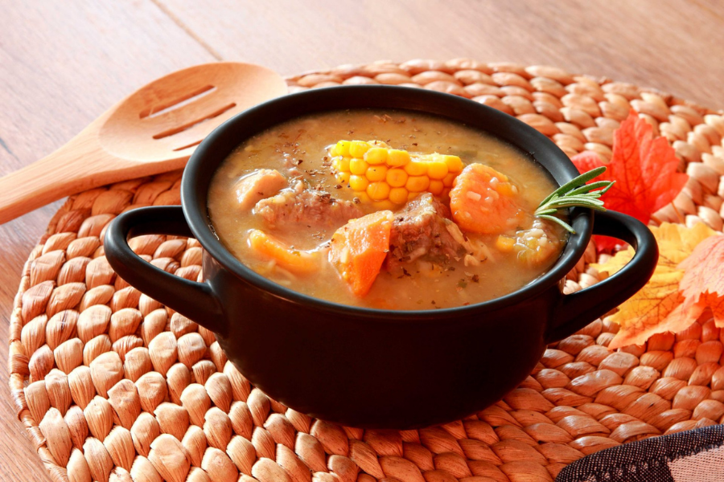
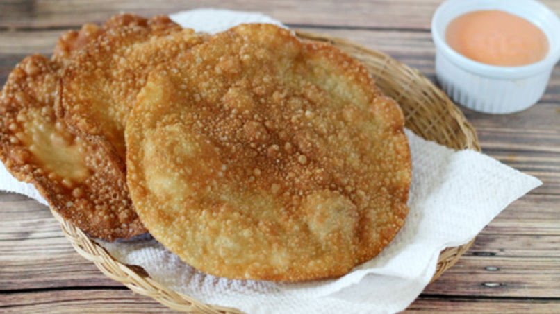

Sancocho
Una sopa sabrosa y elaborada con carnes, vegetales y mucho más.

Mangú
Plato tradicional dominicano de un pure de plátano que consite de plátanos verdes (o maduros), agua, sal y mantequilla. Se acompaña típicamente con cebollas sofritas en aceite y vinagre, salami, queso blanco frito y, en ocasiones, aguacate.

Yaniqueques
Los Yaniqueques son un plato que servían como imitación a los panqueques. Son una comida callejera muy popular en el país, vendida mayormente en la playa.